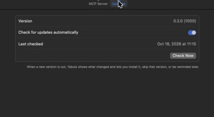
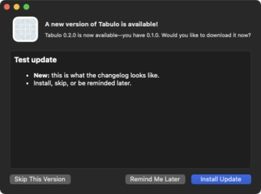

In-app updates
Tabulo updates itself. It checks for new versions, shows you what changed, and installs only when you say so.
When Tabulo checks
- When it starts, then once a day.
- Whenever you choose Tabulo ▸ Check for Updates….
- From Settings ▸ Updates ▸ Check Now.

Your choices

| Button | What happens |
|---|---|
| Install Update | Downloads the new version, verifies it, then Install and Relaunch replaces the app and opens it again. Your connections and settings are kept. |
| Remind Me Later | Nothing now. Tabulo asks again at the next check. |
| Skip This Version | Tabulo won't mention this version again, only newer ones. |
Turning checks off
Untick Check for updates automatically in Settings ▸ Updates. You can still check by hand.
Is it safe?
Every update is signed with Tabulo's private key, and the app only installs an update whose signature matches. A changed or corrupted download is refused.